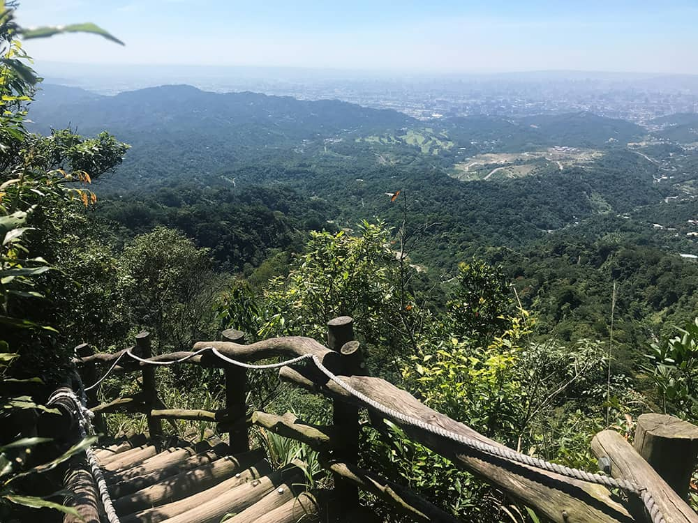

來回約 4K
中正露營區長青橋大坑四號步道大坑五號步道頭嵙山三角點原路折返中正露營區
素有「台中陽明山」之稱的大坑風景區內有十數條登山步道，是每逢假日遊客便紛至沓來的熱門健行景點。而在這十數條交錯連貫的登山步道中，為舊台中市最高點，同時也是小百岳之一的「頭嵙山」便位於此。當踏上山頂時，人們築起的建物宛如迷你積木，密密麻麻地排佈在山腳彼方，使人不禁驚嘆人類強大的創造力，卻也不禁感嘆在大自然底下依舊如此渺小。

凡大坑一至五號的登山步道都可以通向頭嵙山，而我把摩托車停放在中正露營區，從四號步道起登。中正露營區旁則是全台唯一合法允許飼養獼猴的郭叔叔獼猴生態區，因此可以醒目地看見與獼猴相關的告示標語。
途經長青橋，過吊橋之後，大坑四號步道的入口便接踵而來。
大坑四號步道由圓滾木堆砌而成，步道里程標示１．９公里，且一路陡上，很多人認為它是大坑所有登山步道中難度最高的一條，不過也被很多岳界山友拿來當作負重練習或維持登山「腳」感的對象。
前半段的陡上確實有些折騰人，所幸步道兩側皆有林蔭庇護。
經歷一番爬階梯後接續一條平緩棧道，此處是個不錯的展望取景點，稍喘的同時也可以拿出手機、相機拍幾張景照。
抵達中柳亭，不休息，繼續前進。
接著又是陡上，有許多網友稱呼大坑四號步道是台中版的萬里長城，可能他們不知道台中萬里長城這個稱號已經被大肚搶先一步拿去用了。但不管怎樣，這樣一階一階彷彿看不見盡頭似地往上掙扎，著實考驗登山客的腿力與毅力。
這不是前幾張照片的重播，而是像這樣經歷一番辛勞後，便以開闊美景作為獎勵的環節在大坑四號步道中有好幾處。
不知道誰家的鸚鵡飛來這遛達。

當步道一側開始沿著山景線連綿時，即表示已經由四號步道即將與五號步道銜接，與此同時，頭嵙山山頂也近在咫尺。
頭嵙山，高度８５９公尺，小百岳編號４１，為二等三角點。之前曾提到加里山山脈雖然沒有任何一座百岳，卻有很多小百岳，而頭嵙山便是其中之一。
在台中縣市未合併前，頭嵙山是舊台中市的最高峰，但合併後望向和平區那一票中高級山老妖怪，頭嵙山也只能默默讓出最高峰的寶座，徒留一個頭銜供人追憶。
這個方向放眼望去可以俯瞰新社區，若在花海期間似乎可以在頭嵙山上以空視的角度欣賞整片花田。
其實出發前預期是想從四號上，一號下，走一個Ｏ型軌跡。然而導航路線報的不好，規劃了一條極為偏僻的鄉間小路路線，不僅迷路還被狗追，好不容易找到路抵達中正露營區時已經中午時分。最後只好放棄預定計畫，改由原先四號步道路線去回，至於其他沒走過的一、三號步道只能擇日再來拜訪了。